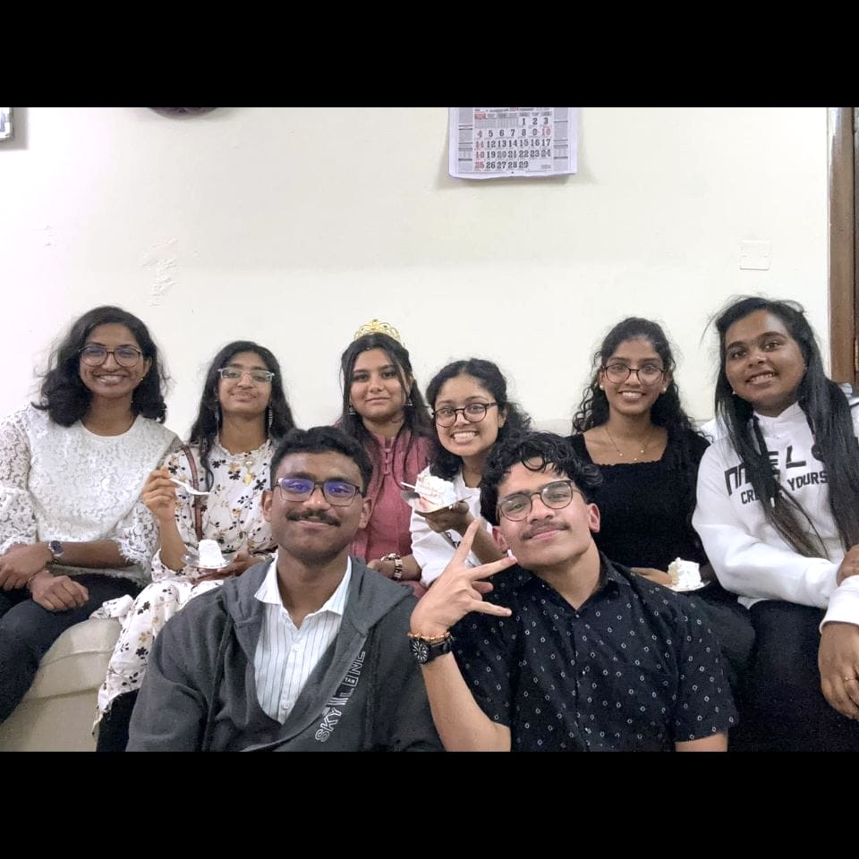
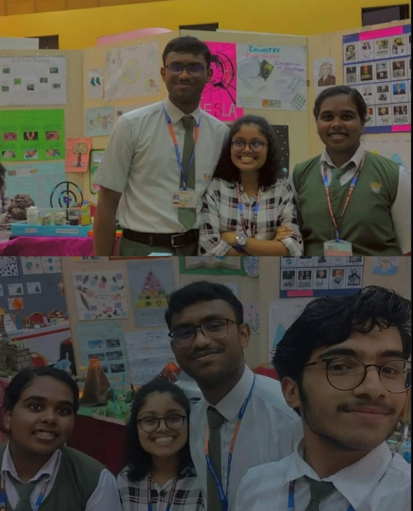
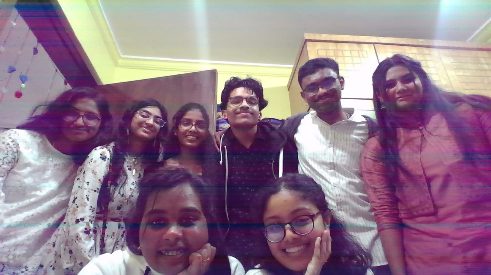
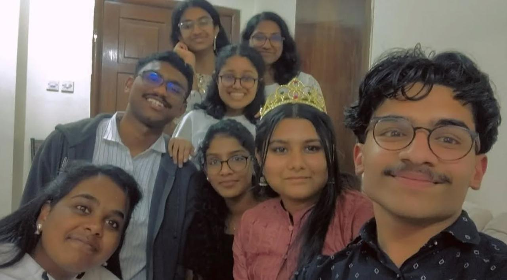

സ്വയം സ്നേഹിക്കുക, എപ്പോഴും സ്നേഹിക്കുക.

Dope Denim Crew!(Brooklyn 99 referrance)
Whaaaat smilesssss of ussssss, you can see one is smiling w cake and sitting down and struggling to adjust and top right, there's mani who's tryna fit to frame yet she's cute.
And anu, (black, black ganggg!) prettyy and smileyy and amanda, the makri who looks like advertising the whatervr cake it was.
Then the bday gurl with crown aaah, and fanny as always the vibes and one goofy Lenaya, angel duo fr and there's subin, holding his smile.
best night before boards, i.e the 2nd of February heheh, before foundation & sajinu bday. I know that and yet a day in this year to be remembered. And also the events that occurred, cake cut and dancing hehehe & all darkness wala photography wooo and the food yummmmmmmm.
Ended a bit late but whatever, 18th beginnings for nandana and furthermore, and I shall be back for the next.

Bhudhi Peoples..🤓
The dynamic trio and the well known Team Shaastrotulsav(I think there was a name)since "22, on top fr.
Throwback to 10th September of 2023, where heuristic was first held in school and yet us winninggggg medalsfor presentation something in November.
And yet 2022 oct to dec was jus another story with dramas in donkey mani's home, peak days and enjoyment fr. Family typa thingssssss on top and happy smiles!

A Day To Remember
Just a group of humans tryna find where the camera is at. Happppyyyyyy ahhhh memories.
Look at those smiles and eyes, just elegant and beautiful, just like their presence and existence!Always, a worth living and liveable, lovable life w them, always always. They jus too cute innit?
Throwback to the night of February 2nd!🤍

Narrator's Message
Well, hi it's me again, the narrator
Here we have the 02/02/2024 rememberance and looking up to my gallery, on finding something real beautiful. There's the octagonal army, filled with some donkeys and smarties and beauties. And on seeing the first video, you can see sanal uncle literally smiling.
It was so well coordinated and with the support of them as well, sanal uncle didn't want to come in frame after I asked, and there comes a donkey neha, with the words of not being in frame and amanda thinking of something else when fanny kept it as a heart.
And the subin yapping, and all in such a pleasant, beautiful mood before the boards ahahahah and ye rest of 4, but nandana with a crown boguht by amanda for 300 fils (I guess, cz I pretty much looted her that day)and ye restjust smiling and me with an uncle aaah post with no beard just a jaw and hair or anything, but overall worth it performance and a worth it day and a worth it night with them.
The reunion or smthg like the part of 2022 christmas at same venue fyi, but all changed by minds and looks but not by soul or heart and yeah it's just me w the whole crew, missing my dearest loves ong. Hehehegeeheh, and there I'll come back again.
*quality might be weird as it was taken my motorola, and therefore quality doesn't matter when memories are created.